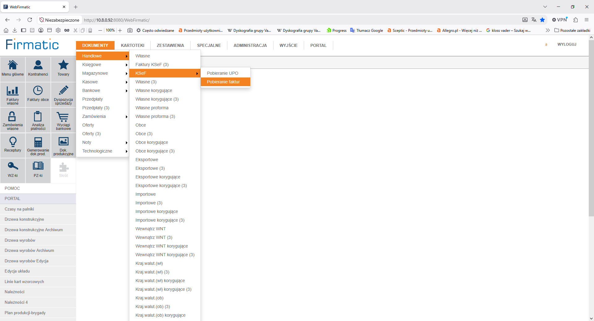

Michał Kabza
Portfolio
Programista, Projektant 3D, Reżyser, Fotograf, Elektronik, Ekonomista
Kontakt mail'owy do mnie
- Język i Bazy Danych Progress
- Firmatic - Oprogramowanie dla przedsiębiorstw (system sprzedaży
i fakturowania, magazynowy, zamówienia, księgowość, kadry i płace, ERP, technologia i produkcja),
oparte na relacyjnej bazie danych Progress.
- Firmatic w pewnym sensie jest moim adoptowanym dzieckiem.
Zaczynałem od wdrażania u klientów nowych wersji, przyjmowania ich uwag i testowania gotowych
poprawek. Następnie zostałem programistą (backend i frontend) i projektantem systemu. Odpowiadałem
także za: komunikacja aplikacji z innymi zewnętrznymi systemami i bazami danych (export i import
danych, np: do systemu LANTEK), połączenie z zewnętrznym sklepem internetowym opartym na bazie
danych MySQL, tworzenie nowych funkcjonalności zgodnie z aktualnymi przepisami ustawowymi i wymogami
księgowości (np: KSeF, wyłączenie z podatku ludzi młodych do 26 roku życia, i inne).

- C# .NET
- JavaScript
- HTML CSS
- Java
- System sprzedaży biletów na koncerty